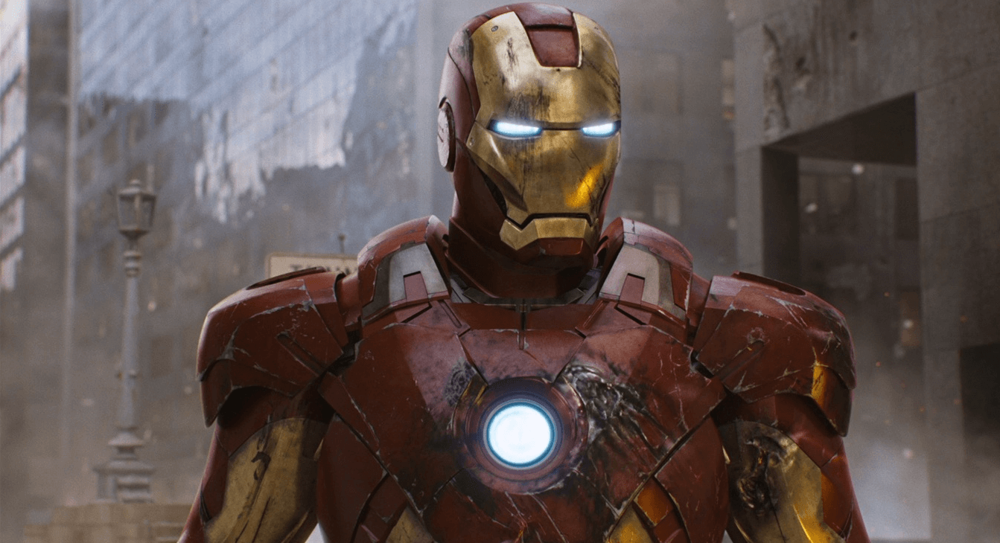

Iron Man
Anthony Edward "Tony" Stark
Aliases
"Shellhead," "Golden Avenger," "Tetsujin"; formerly Crimson Dynamo, Iron Knight, Hogan Potts, "Spare Parts Man"; impersonated Cobalt Man (Ralph Roberts)
Identity
Publicly Known
Citizenship
U.S.A
Place of Birth
Long Island, New York
Occupation
Adventurer, president emeritus of Stark Industries, founder of Maria Stark Foundation; formerly director of S.H.I.E.L.D., CEO of Stark Industries, Stark Solutions, Stark Enterprises, Circuits Maximus & Stark International, US Secretary of Defense, computer technician
Known Relatives
Howard Anthony Stark (father, deceased), Maria Collins Carbonell Stark (mother, deceased), Morgan Stark(cousin), Edward Stark (uncle, deceased), Isaac Stark, Sr., Isaac Stark, Jr. (ancestors, deceased)
Group Affiliation
The Avengers, Initiative, Hellfire Club (outer circle), S.H.I.E.L.D., Illuminati, Thunderbolts, Force Works, Queen's Vengeance, Alcoholics Anonymous
Education
Ph.D.s in physics and electrical engineering
Powers
None; Tony's body had been enhanced by the modified techno-organic virus, Extremis, but it is currently inaccessible and inoperable.
Abilities
Tony has a genius level intellect that allows him to invent a wide range of sophisticated devices, specializing in advanced weapons and armor. He possesses a keen business mind.
Weapons
The Iron Man armor includes Tony’s primary energy weapon, repulsor rays, a powerful particle beam which is standard equipment in the palms of his armor; the repulsor ray can repel physical and energy-based attacks, traveling as either a single stream or as a wide-field dispersal. The armor has also been outfitted with pulse bolts (extremely powerful plasma discharges which grow in strength as they seek their target), sonic generators, explosive shell projectiles, mini-missiles, magnetic field generators and a laser torch built into the finger of Tony’s gauntlet. The armor’s surface can generate an electric charge to dispel attackers.
Paraphernalia
Tony’s most recent armor is protected by an energy-draining shield which expands from the gauntlets, as well as a personal deflector shield. The armor grants Tony superhuman strength (lifting 100 tons at maximum power). Its Jet boots enable flight at Mach 8; he can also hover utilizing a localized gravity field. The armor’s internal air supply lasts more than one hour and can be sealed for travel through low oxygen, underwater or outer space environments. The armor also features a chronometer, radar, sonar, a magnometer, an atom-force microscope, photon, heat, motion and other sensor instruments. The armor contains a subspace/satellite radio communications array which receives local radio and video signals; the armor can also jam transmissions. The chest plate features the unibeam, a powerful searchlight that can project beams in virtually every light spectrum (visible, infrared and ultraviolet); it also features a laser beam projector, an EMP (electromagnetic pulse) generator which can shut down electronic devices within a 50-yard radius, a scanning device that travels along energy waves emitted from the unibeam and a holographic generator.